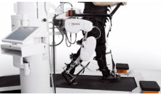

Part A: Existing Technology
Innovations that have transformed lives over the years
Before 2010
Whole Body Vibration Machine
An individual taking physical therapy could stand up on the vibrating machine to loosen up the hamstring muscles. This is beneficial for someone with CP due to the fact that individuals with CP constantly have tight hamstrings. Getting loose before a workout or therapy makes moving easier without the difficulty of opening one's legs.

Lokomat Creation
Lokomat therapy is a fun way to improve a person with cerebral palsy's walking gait. It's kind of like a treadmill but designed for people with bilateral walking patterns. A huge robot is harnessed onto the person's body with arms free and then they walk in a straight line.
The treadmill can be elevated to increase difficulty, making it feel like climbing a hill. A big smartboard connected to the treadmill features games including racing games where you collect coins, park levels where you run up hills, and a penguin game where you workout each leg jumping on icebergs.
It also has an EKG-like screen to monitor walking quality - a straighter line means better foot placement.
Before 2020
Sensory Needs App - Match the Card
This app helps kids learn to communicate using pictures and matching them to the correct word of that same category. It's commonly used in speech therapy to help kids who need help with their pronunciation skills.

Exoskeleton
A wearable robot for kids with cerebral palsy to improve their lower body extremities. It tracks a person's typical walking pattern and redirects it into a more straight line by keeping hips centered and posture upright.
The device assists with daily functions that a person with Cerebral Palsy may have trouble with, including crouching to grab something on a lower shelf. The device locks itself around the person's knee and assists with crouching by extending the knee further than what a person with CP typically can, without putting extreme weight on the knees that could cause a fall or buckled knee.
After 2020
Stasiam - Video Game Physical Therapy
Stasiam is an app that combines video games with physical therapy. For example, a person with CP might have weak hip strength - one game is a racing game where you control the car by holding steering wheels and widening each side of your hips and thighs.
Another example addresses the common issue of kids with CP dragging their feet when walking. A Super Mario Brothers-style game requires players to step on a wooden board to jump on Goombas. To go down tubes or jump on poles, players must squat - helping with joint strength, abdominal and obliques strength, leading to better posture and upper body control.
The games use technology like the Nintendo Ring Con, dance pads (flat controllers with nine squares), and the Wii Balance Board that uses pressure to track center of gravity.
GoMove.org
An app that allows people with CP to do exercises at home, catered to individual needs and abilities. It allows individuals to set goals such as tying shoelaces, buttoning up a shirt, or going up stairs without a railing. Therapists work with clients to help set goals and celebrate achievements.